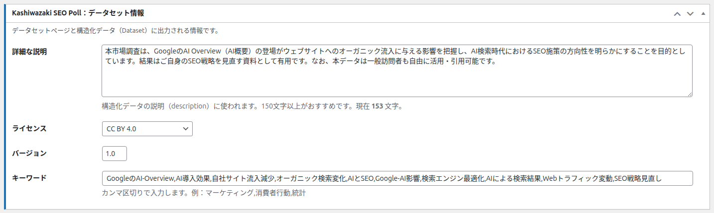
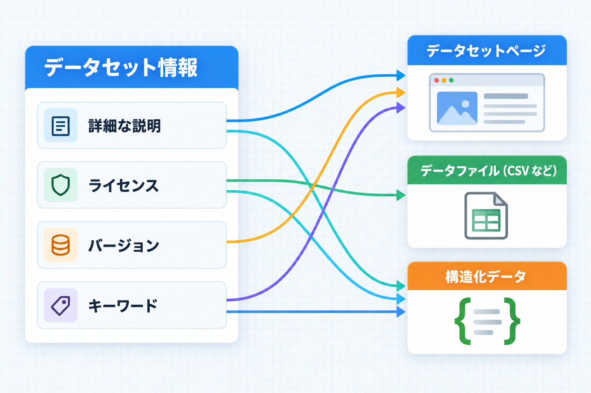

データセット情報
編集画面の「データセット情報」ボックスでは、集計データの説明・利用条件（ライセンス）・版・キーワードを設定します。ここで入れた内容は、データセットページ・データファイル・構造化データに使われます。

ボックスの冒頭には「データセットページと構造化データ（Dataset）に出力される情報です。」と表示されます。
入力した内容が使われる場所

| 項目 | データセットページ | データファイル | 構造化データ |
|---|---|---|---|
| 詳細な説明 | 一覧のカード、詳細ページ、形式別ページの本文と説明文 | — | 説明（記事・詳細ページ・形式別ページ） |
| ライセンス | 形式別ページの情報 | CSV の末尾、XML・YAML・JSON・SVG の中 | ライセンス |
| バージョン | 形式別ページの情報 | — | 版（詳細ページ・形式別ページ） |
| キーワード | 一覧画面の「データセットキーワード」列、形式別ページの情報 | — | キーワード（詳細ページ・形式別ページ） |
詳細な説明
調査の目的・対象・期間・使い方などを文章で書きます。
| 項目 | 内容 |
|---|---|
| 入力形式 | 複数行のテキスト |
| 既定値 | 空 |
| 画面の説明 | 「構造化データの説明（description）に使われます。150文字以上がおすすめです。現在 N 文字。」 |
| 文字数 | 入力するたびに「現在 N 文字」がその場で更新されます。150文字未満でも保存できます |
| 空のとき | データセットページの説明文は表示されません |
| 使えない文字 | HTML のタグは取り除かれます |
書き方のコツ
「何を・誰に・いつ・どうやって調べたか」「結果をどう使えるか」を入れると、読む人にも検索エンジンにも内容が伝わりやすくなります。例: 「Web担当者を対象に、AI 概要の登場後のオーガニック流入の変化を調べた投票です。2026年2月から受付を開始しました。自社の対策を見直す際の参考データとして自由に引用できます。」
ライセンス
集計データをほかの人がどう使ってよいかを示します。
| 選択肢 | 意味（概要） |
|---|---|
| CC BY 4.0（既定） | 出典を示せば、商用も含めて自由に利用・改変できる |
| CC BY-SA 4.0 | 出典を示し、改変したものも同じ条件で公開すれば利用できる |
| CC BY-NC 4.0 | 出典を示せば、営利目的以外で利用・改変できる |
| CC0 1.0 | 権利を放棄し、条件なしで利用できる |
| CC BY-NC-SA 4.0 | 出典表示・営利目的以外・同じ条件での公開が条件 |
| CC BY-ND 4.0 | 出典を示せば利用できるが、改変はできない |
| CC BY-NC-ND 4.0 | 出典表示・営利目的以外・改変なしが条件 |
| Public Domain Mark 1.0 | 著作権の保護がないことを示す |
| CC BY 3.0 | CC BY の旧版 |
| CC BY 2.0 | CC BY の旧版 |
ライセンスの正確な内容
各ライセンスの正確な条件は、クリエイティブ・コモンズの公式サイトで確認してください。データファイルや構造化データには、選んだライセンスの公式ページの URL が書き込まれます。
バージョン
| 項目 | 内容 |
|---|---|
| 入力形式 | 短いテキスト（自由入力） |
| 既定値 | 1.0（空で保存すると 1.0 と表示し直されます） |
| 使われる場所 | 形式別ページ（/datasets/csv/detail-番号/ など）に埋め込まれるデータの情報と、詳細ページ・形式別ページの構造化データの版 |
おすすめ
選択肢を大きく変えたときや、投票数を手で直したときに「1.1」「2.0」のように上げておくと、管理の目印になります。
キーワード
| 項目 | 内容 |
|---|---|
| 入力形式 | テキスト（カンマ区切り） |
| 画面の説明 | 「カンマ区切りで入力します。例：マーケティング,消費者行動,統計」 |
| 既定値 | 空 |
| 使われる場所 | 一覧画面の「データセットキーワード」列、詳細ページと形式別ページの構造化データ・ページ情報 |
記事の投票フォームのキーワード
記事に置いた投票フォームが出力する構造化データでも、ここのキーワードが使われます。ここが空のときだけ、その記事に付けたタグがキーワードとして使われます。
よくある使い方
調査データとして引用してもらいたい
- 「詳細な説明」に調査の目的・対象・期間と「自由に引用できます」などの案内を書きます。
- 「ライセンス」は既定の CC BY 4.0（出典表示で自由に利用可）のままにします。
- 「キーワード」にテーマの言葉を3〜5個入れます。